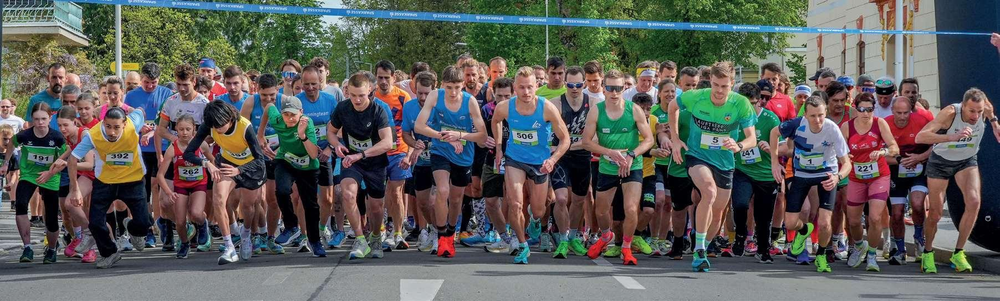
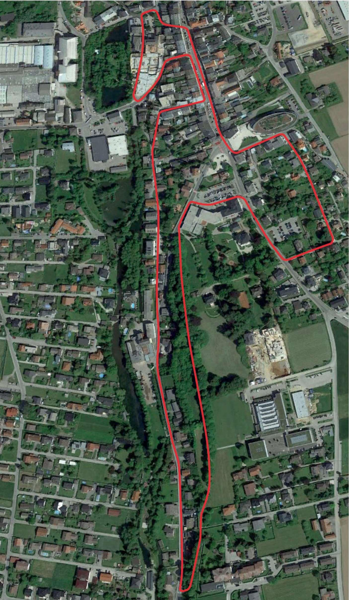
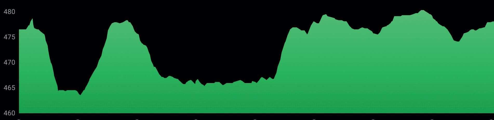

41. Mattighofener Sparkassen City Run
Samstag 25. April 2026 - Stadtplatz Mattighofen

Informationen zum City Run 2026
Wenn sich Mattighofen wieder mit Laufschuhen, Jubel und strahlenden Gesichtern füllt, dann ist es Zeit für den 41. Mattighofener Sparkassen City Run. Dieses Rennen ist und bleibt eine Herzensangelegenheit - eine Laufveranstaltung von Läufern für Läufer und eine echte Party für alle, die den Laufsport lieben.
Ein großes Dankeschön gilt unseren treuen Sponsoren, den engagierten freiwilligen Helferinnen und Helfern sowie der Stadtgemeinde Mattighofen. Eure Unterstützung, euer Einsatz und euer Vertrauen machen dieses besondere Laufevent Jahr für Jahr möglich.
Wir wünschen allen Teilnehmerinnen und Teilnehmern unvergessliche Momente, starke Beine und viele glückliche Zieleinläufe.
Wolfgang Strasser und Sepp Hartl
Informationen
Nachmeldung bis 45 Minuten vor Start möglich (Sparkasse)
Ein Teil des Reinerlöses geht an die Lebenshilfe Mattighofen.
Time2Win - Chipzeitnehmung (Startnummer)
Ergebnislisten und Urkunden direkt nach der Veranstaltung unter www.tsvmattighofen.at oder www.time2win.at.
Strecke

Streckenrekord
Damen 37:35 Minuten
Herren 32:08 Minuten
Vorjahressieger
Bettina Taferner, Triathlon Mattigtal
Jochen Köllnreitner, LC Sicking
Streckenprofil
3 Runden à 3.290m, durchgehend asphaltiert, Höhendifferenz 40m pro Runde
